は、ノード (
は、ノード ( ,
,  ) における基本関数で、
) における基本関数で、 \,\!") は重み付けです。計算を制限するため、 と 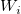 は円の中心(, )で半径が 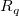 および 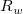 を持つ円の中にあるデータポイントで計算されます。
は重み付けです。計算を制限するため、 と 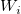 は円の中心(, )で半径が 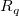 および 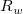 を持つ円の中にあるデータポイントで計算されます。
ワークシートデータがXおよびY方向に等間隔に並んでいない場合、ランダムまたは等間隔でないXYデータに対するOriginの5つのグリッディング手法の1つを使います。
内容 |
このグリッディング法は、1984年にRenka と Clineによって開発されたアルゴリズムに基づいています。このアルゴリズムの主要な計算は次のように行われます。
200~1000程度のデータポイントが一様に分布している場合には、Renka-Cline法は良い選択肢となります。
この手法は、Franke と Nielsonによって開発された修正Shepardグリッディング法を組み込んだものです。これは、次の式でデータを補間する、距離で重み付けしたグリッディング法です。
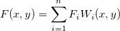
ここで は、ノード (, ) における基本関数で、 は重み付けです。計算を制限するため、 と 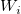 は円の中心(, )で半径が 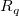 および 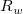 を持つ円の中にあるデータポイントで計算されます。
次の式で定義される重み付けで開始します。
.
半径 を与えると、その相対的な重み付け  は、
は、
![w_k=[\frac{(R_w-d_k)_{+}}{R_wd_k}]^2](../images/Gridding_Methods_for_Randomly_Spaced_Data/math-0e141a3a2c838ddf192009baaf5116ad.png "w_k=[\frac{(R_w-d_k)_{+}}{R_wd_k}]^2") ここで、
ここで、
は (x, y) と( ,
,  )間の距離です。
)間の距離です。
-(x,y)||_2\,\!") .
.
どの >0においても、次のようになります。
=
=1") .
.
次に、 節点関数 が局所的な近似関数  に置き換えられます。
に置き換えられます。
=c_{k1}(x-x_k)^2+c_{k2}(x-x_k)(y-y_k)+c_{k3}(y-y_k)^2+c_{k4}(x-x_k)+c_{k5}(y-y_k)+F_k\,\!")
は、節点の 範囲内にあるデータに重み付けされた最小二乗二次フィット関数です。そして、係数は次の式を最小化するものです。
![\varepsilon _k=\sum_{i=1,j\neq k}^N\omega _i(x_k,y_k)[c_{k1}(x_i-x_k)^2+\ldots +c_{k5}(y_i-y_k)+F_k-F_i]^2](../images/Gridding_Methods_for_Randomly_Spaced_Data/math-8ab8ecc395dfc1db378345af3deb4929.png "\varepsilon _k=\sum_{i=1,j\neq k}^N\omega _i(x_k,y_k)[c_{k1}(x_i-x_k)^2+\ldots +c_{k5}(y_i-y_k)+F_k-F_i]^2")
ここで
.
上記で補間関数は、局所近似関数であり、格子ポイント および での影響半径に依存すると考えることができます。2つの整数  と 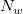 が、 と を計算するのに使われます。(これらは、関数のパラメータ q と w であり、それぞれ二次補間局所因子と重み関数局所因子です詳細は、このセクションの『XYZグリッディングダイアログボックス』をご覧ください。)
と 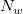 が、 と を計算するのに使われます。(これらは、関数のパラメータ q と w であり、それぞれ二次補間局所因子と重み関数局所因子です詳細は、このセクションの『XYZグリッディングダイアログボックス』をご覧ください。)
および 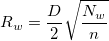
ここで n はデータポイントの数で、 D は一対のデータポイント間の距離の最大です。そのため、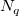 と は、それぞれ各格子において、距離 および の範囲内にあるデータポイントの平均の数だと考えることができます。
と の値を増加させると、計算が全体に及ぶようになり、同様にこれらの値を減少させると、計算が局所的になります。 一般に、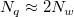とすると良い結果が得られます。デフォルトでは  および となっています。しかし、以下の制約を満たしている必要があります。.
および となっています。しかし、以下の制約を満たしている必要があります。.
「XYZグリッディング」ダイアログは、 NAG 関数ライブラリを呼び出して、Shepardグリッディング法を実行しています。また、Originは Shepardグリッディング法を行うXファンクションも提供しており、xyz_shep_nag および xyz_shepは、 と を使って、この手法を組み込んでいます。
この関数は、TPS(Thin Plate Spline)アルゴリズムを使って、ランダム配置データの行列変換を行う手法を提供しています。TPS法は、物理的な補間の方法です。グリッディングデータを生成するため、この方法では、すべてのデータポイントが薄い弾性プレートまたはスプライン上に分布しているものと仮定します。プレートはグリッド点に制限され、グリッド点を結ぶことで、2次元の曲面を形成します。曲面は、データポイントに合うように形成するために点と点の間で変形します。最適な結果は、通常、スプラインの「曲げエネルギー関数」を最小化することで見つかります。
この手法は、曲げエネルギーの最小値を見つけるので、プレートの変形を最小に抑え、より良い結果が得られます。この計算は、曲率計算を最小化するのにも似ています。TPSグリッディング法を使った曲面プロットは、他の手法よりも滑らかになりますので、この手法は、局所的に平坦な曲面の補間に対して適しています。
TPSアルゴリズムの数学的な説明としては、次の曲げエネルギー関数が与えられ
dxdy")
そして、最小化される関数は
=a_1+a_xx+a_yy+\sum_{i=1}^pw_iU(||(x_i,y_i)-(x,y)||)")
ここで、=r^2\log (r^2)\,\!") です。
です。
TPSグリッディングを実行するには、スムージングのパラメータと補外パラメータを指定する必要があり、スムージングのパラメータは補間した曲面の滑らかさを制御し、 補外パラメータは、元のデータの範囲を超えて行列のセルにデータを入力するのに使用されます。
TPSアルゴリズムについての詳細は、参考文献『Donato and Belongie, Approximation Methods for Thin Plate Spline Mappings and Principal Warps』をご覧下さい。
Kriging法(鉱山工学者の D. G Krigeの名前から付けられた)は、空間データを補間するのに、よく知られている地理統計学の手法です。この手法は、重み付けした隣接平均により、計算したい位置(グリッド点)での推定した分散を最小化する重み付け移動平均補間(補外)法です。そして、重み付けした値は元データの空間的な相関構造で決定します。
このアルゴリズムは、空間の連続性または従属性のモデルが必要です。通常、処理を2つに分けることができます。
Kriging相関法を実行するとき、次のパラメータを使って処理を制御することができます。
Kriging法についての詳細は、参考文献『Stein, Interpolation of Spatial Data』をご覧ください。
加重平均法は、1/rの重み付けを持つポイントの単純な加重平均で、rは、検索半径の範囲内にあるセルからの各ポイントの距離です。検索半径の範囲内に値が無い場合、少なくとも1ポイント出現するまで半径を拡大します。検索半径を拡大するということは、各ポイントは隣り合うポイントとの内部的な関係を強め、詳細な部分を失って、より滑らかな曲面を作成するということになります。